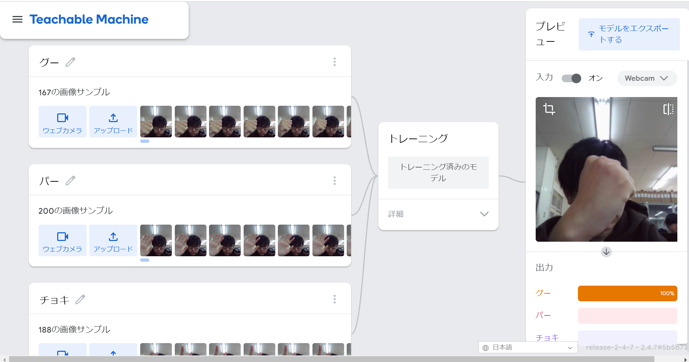
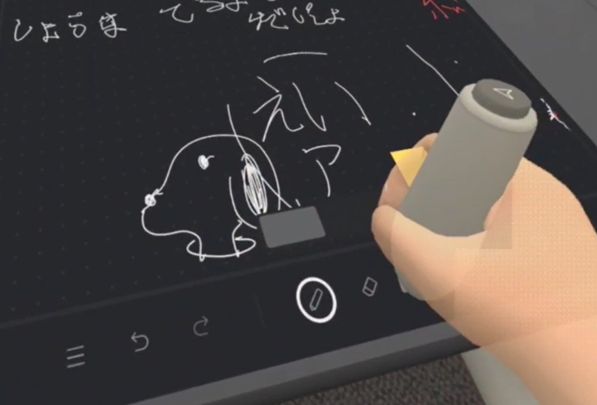

第2週目
2-1 １週目のレポートをHTMLで作る
１週目のレポート
1.内容
githubを使って一週目のレポートを作成した。
2.感想
今まではwordやグーグルスプレッドシートを使ったレポートの作成だけなので、こういったプログラムの中でレポートを書くことは
初めてで、とても新鮮だった。
2-2 機械学習体験

1.内容
この学習では主に、AI、機械学習、そして深層学習の特徴について学び、またそれらの違いについて学んだ。
2.感想
AIについては、ニュースなどでよく知っていたが、機械学習、深層学習については全く知らなかった。また、AIの定義についていざ聞かれたとき
にパッと答えられず、この時に私はAIについて知っているようで理解していなかったということに気づいた。
2-3 VR（バーチャルリアリティー：Virtual Reality）会議室の体験

1.内容
VR空間に入り、メタバースを体験した。
2.感想
VR空間に入ることが生まれて初めての体験で、とても楽しかった。。元日のように、ペンを持って字を書いたり、マイクを使って遠くの人とも
会話することができたりし、会議などがメタバース空間で行われることは遠い未来ではないと思った。また、現実で行っていることとVR空間で
行っている動作とは少しラグがあって、酔ってしまった。